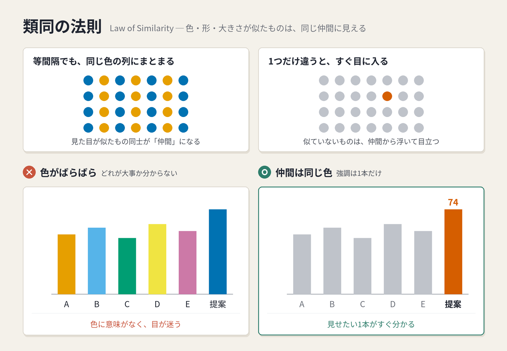

第13回
類同の法則
Law of Similarity

どういう知識か
類同の法則は、色・形・大きさなど見た目が似ているものは、同じグループに見えるという知覚のはたらきです。1923年に心理学者マックス・ヴェルトハイマーが、近接（第1回）などと並ぶまとまりの要因として挙げました。
Nielsen Norman Group の記事によると、まったく同じでなくても、色・形・大きさのどれか1つが共通していれば仲間に見えます。近接の法則は「距離が近い」ことでまとまりますが、類同は離れた場所にあっても見た目が似ていればまとまるのが違いです。とくに色は強い手がかりで、形の違うもの同士もつなげます。
裏返すと、似ていないものは仲間から浮いて目立ちます。同じ記事は、いちばん押してほしいボタンにだけ別の色を割り当てるよう勧めています。
具体例
悪い例：手法A〜Eと提案手法の棒グラフを、1本ずつ違う色で塗る。色に意味がないので「どれとどれが仲間か」が伝わらず、いちばん見せたい提案手法も埋もれます。研究サイトで、リンクではない見出しや強調語にリンクと同じ青を使うのも、押せるものと押せないものが仲間に見えてしまう例です。
良い例：比較の手法はすべて同じグレーにし、提案手法の1本だけ色を変えて数値を添えます。複数の図に同じ条件が出てくるなら、どの図でも同じ色にそろえます。サイトでは、リンクの色を1つに決め、リンクにだけ使います。
今日から使えるひとこと
スライドやグラフを作ったら、「同じ色＝同じ意味」になっているかを確かめてください。意味の違うものに同じ色を使っていたら変え、強調したいものは1つに絞って、それだけ色を変えます。
研究サイトでは、リンク・ボタン・見出しのそれぞれで見た目（色・形・大きさ）をそろえます。同じ見た目なら同じようにはたらく、と読む人は期待するからです。
出典
- Untersuchungen zur Lehre von der Gestalt. II https://doi.org/10.1007/BF00410640 Psychologische Forschung, 4, 301–350。類同を含むまとまりの要因を示した原典
- Similarity Principle in Visual Design https://www.nngroup.com/articles/gestalt-similarity/ 色・形・大きさのどれかが共通すれば仲間に見える。離れていてもまとまる。リンク色はクリックできるものだけに、主要ボタンには別の色を
- A century of Gestalt psychology in visual perception: I. Perceptual grouping and figure–ground organization https://doi.org/10.1037/a0029333 Psychological Bulletin, 138(6), 1172–1217。ヴェルトハイマーが挙げたまとまりの要因に近接と類同が含まれる
- Law of Similarity（Laws of UX） https://lawsofux.com/law-of-similarity/ リンクやナビゲーションは本文の文字と見た目で区別する